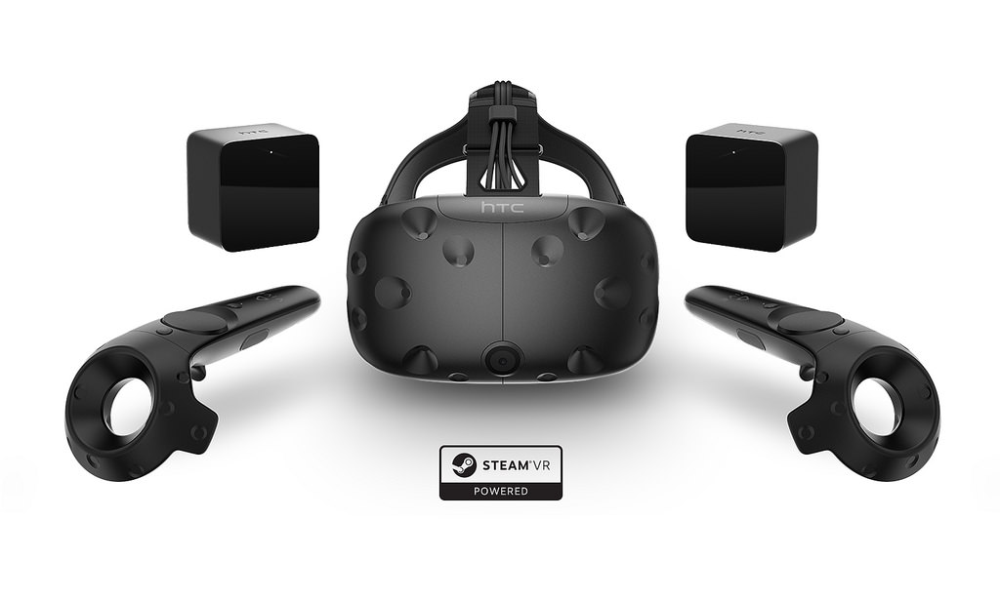

Applications of AR and VR in the Future
I'm a geek, and I always have been, so it's no surprise that I've been a fan of augmented reality
and virtual reality since they started becoming more realistic pieces of technology. Both of these
technologies allow us to see things either on top of the physical world, or in a completely new
digital world. There are seemingly endless possibilities for AR and VR!
In my course on game design and development, we talked quite a bit about VR and how it’s an up and coming piece of technology that could revolutionize the gaming industry. There are plenty of opportunities to provide experiences that have only been half-baked so far: Things like exercising, shooting a 360 degree wave of realistic zombies, and creation of whatever you can think of. This YouTube video shows what the experience of VR could look like, and it’s pretty different from your average video game.
These also have very real applications for businesses and creative types. Two articles here and here got me thinking about how regular, non-enthusiast, consumers could interact with these products, and they were very interesting. Most ideas considered in those articles have yet to materialize in some way, but there is some software for VR and AR that that is pushing outside the realm of video games. Take, for instance, TiltBrush by Google. It allows you to create stunning 3D art in a digital space. Even at Penn State’s Applied Research Lab, VR is used to help them with their research.
While VR seems to be gaining more traction, AR is also very much alive. PokemonGo is still fairly popular, and it uses simple AR mechanics. There is also the Microsoft HoloLens, which allows users to place ‘windows’ on the walls in their home or see 3D projections of things. You can watch a video on a wall, and look down at your coffee table and see a 3D game of Minecraft playing out.
I think these technologies are here to stay. They have an untapped store of potential that just needs to be brought out a bit. They may stay limited to the “computer geek” market, but I doubt they will ever just pass like previous technology fads.
In my course on game design and development, we talked quite a bit about VR and how it’s an up and coming piece of technology that could revolutionize the gaming industry. There are plenty of opportunities to provide experiences that have only been half-baked so far: Things like exercising, shooting a 360 degree wave of realistic zombies, and creation of whatever you can think of. This YouTube video shows what the experience of VR could look like, and it’s pretty different from your average video game.
These also have very real applications for businesses and creative types. Two articles here and here got me thinking about how regular, non-enthusiast, consumers could interact with these products, and they were very interesting. Most ideas considered in those articles have yet to materialize in some way, but there is some software for VR and AR that that is pushing outside the realm of video games. Take, for instance, TiltBrush by Google. It allows you to create stunning 3D art in a digital space. Even at Penn State’s Applied Research Lab, VR is used to help them with their research.
While VR seems to be gaining more traction, AR is also very much alive. PokemonGo is still fairly popular, and it uses simple AR mechanics. There is also the Microsoft HoloLens, which allows users to place ‘windows’ on the walls in their home or see 3D projections of things. You can watch a video on a wall, and look down at your coffee table and see a 3D game of Minecraft playing out.
I think these technologies are here to stay. They have an untapped store of potential that just needs to be brought out a bit. They may stay limited to the “computer geek” market, but I doubt they will ever just pass like previous technology fads.